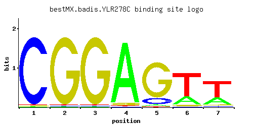

YLR278C
No recorded aliases
Function unknown
Best-performing DNA-binding model.

View and copy the recommended matrices ↘
A | 0.01 0.01 0.01 0.94 0.04 0.23 0.27 C | 0.97 0.01 0.01 0.01 0.14 0.02 0.05 G | 0.01 0.97 0.97 0.04 0.81 0.05 0.05 T | 0.01 0.01 0.01 0.01 0.01 0.70 0.63
A | 1 1 1 94 4 23 27 C | 97 1 1 1 14 2 5 G | 1 97 97 4 81 5 5 T | 1 1 1 1 1 70 63
A | -3.47 -3.47 -3.47 1.08 -2.08 -0.33 -0.17 C | 1.68 -2.89 -2.89 -2.89 -0.25 -2.20 -1.28 G | -2.89 1.68 1.68 -1.50 1.50 -1.28 -1.28 T | -3.47 -3.47 -3.47 -3.47 -3.47 0.78 0.68
Alternative candidate matrices 1
Historical matrix candidates from the original ScerTF database. Expand a source to inspect its original logo, scores, and matrix values.
YLR278CFoat et. al.P = 1View matrix ↘
Gene-level annotations and interactions.
Genes bound in ChIP-chip experiments 112 genes
YAR007C, YAR008W, YAR050W, YBL016W, YBL017C, YBL050W, YBL051C, YBL074C, YBL101W-B, YBR060C, YBR062C, YBR064W, YBR121C, YBR154C, YBR155W, YBR232C, YBR236C, YBR237W, YCR026C, YCR027C, YCR099C, YCR100C, YDL017W, YDL018C, YDL038C, YDL039C, YDL045W-A, YDL073W, YDL074C, YDL077C, YDL137W, YDL156W, YDL157C, YDL158C, YDL195W, YDR027C, YDR089W, YDR090C, YDR177W, YDR310C, YDR311W, YDR440W, YDR494W, YEL012W, YER060W, YER183C, YGL095C, YGL144C, YGR215W, YGR220C, YGR268C, YGR270W, YGR283C, YHL002W, YHL003C, YHL047C, YHR005C-A, YHR022C, YHR023W, YHR067W, YHR118C, YHR119W, YHR120W, YIL075C, YJR067C, YJR068W, YJR135C, YJR139C, YLR273C, YLR274W, YLR457C, YLR459W, YMR041C, YMR119W, YMR119W-A, YMR188C, YMR189W, YMR268C, YMR269W, YMR308C, YNL010W, YNL011C, YNL048W, YNL049C, YNL181W, YNL182C, YNL187W, YNL191W, YNL212W, YNL213C, YNL290W, YNL291C, YNR063W, YOL063C, YOL137W, YOL138C, YOL151W, YOR103C, YOR104W, YOR105W, YOR174W, YOR215C, YPL005W, YPL052W, YPL053C, YPL076W, YPL077C, YPR001W, YPR019W, YPR021C, YPR110C, YPR111W
Genes affected by TF deletion 208 genes
YLR278C, YNL079C, YPL239W, YKL122C, YMR016C, YDR220C, YDR222W, YHR146W, YHR148W, YJL115W, YKL043W, YMR220W, YOR033C, YOR004W, YDR397C, YML113W, YFR033C, YKL110C, YLR026C, YOR038C, YPL014W, YJR112W, YLR374C, YMR103C, YMR105C, YOR287C, YOR347C, YGR250C, YLR120C, YLR156W, YML027W, YOR135C, YPL112C, YBR093C, YJL017W, YMR070W, YMR104C, YMR136W, YNL180C, YBL058W, YER029C, YGL106W, YJL148W, YLR121C, YLR183C, YNR029C, YPL109C, YCR021C, YDR074W, YOR261C, YOR263C, YOR267C, YPL247C, YBR169C, YHR127W, YKL113C, YLR033W, YLR438C-A, YOR073W, YOR075W, YPL055C, YCR047C, YER150W, YHL021C, YKR080W, YML120C, YNL090W, YNR066C, YOR264W, YOR202W, YML100W, YBR164C, YDL135C, YFR041C, YHR149C, YJL122W, YJL124C, YLR095C, YLR101C, YOR074C, YOR078W, YOR384W, YDL041W, YLR314C, YMR145C, YNL155W, YOR357C, YPR060C, YGL111W, YGR220C, YKL149C, YLR192C, YML093W, YML064C, YNL309W, YPL118W, YDR505C, YGR012W, YIR035C, YIR010W, YMR081C, YMR144W, YNL124W, YOL149W, YOR294W, YPR025C, YBL028C, YBR264C, YDL201W, YER031C, YER064C, YGR187C, YGR251W, YGR253C, YJL184W, YNL308C, YNR001C, YNL310C, YPL087W, YER127W, YNL099C, YOR273C, YAR028W, YAL025C, YGL055W, YGR138C, YHR196W, YLR074C, YLR414C, YMR236W, YNL289W, YPL068C, YDR019C, YER158C, YKR025W, YLR258W, YLR262C, YPL255W, YAR018C, YDR209C, YGR135W, YGR139W, YGR167W, YLR073C, YMR235C, YMR239C, YNL290W, YDL048C, YGR079W, YOL122C, YOR367W, YDR481C, YGR078C, YLR321C, YLR387C, YNL160W, YOL119C, YOL151W, YOL093W, YOL123W, YCL031C, YPL129W, YBR054W, YIL138C, YLR297W, YNL107W, YOL041C, YHR200W, YJL079C, YOR025W, YOR091W, YDR055W, YDR087C, YGL255W, YLR300W, YMR001C, YMR034C, YMR005W, YMR038C, YNL104C, YOL038W, YPL202C, YBR214W, YEL037C, YGL068W, YGR173W, YHR169W, YKL134C, YLR079W, YLR049C, YLR051C, YMR181C, YMR250W, YNL232W, YOR026W, YOR092W, YDL023C, YDR152W, YCL040W, YIL011W, YML080W, YPL166W, YDL022W, YDR121W, YNL166C, YBR278W, YDR299W, YNR019W
Genes supported by both experiments 3 genes
YGR220C, YNL290W, YOL151W